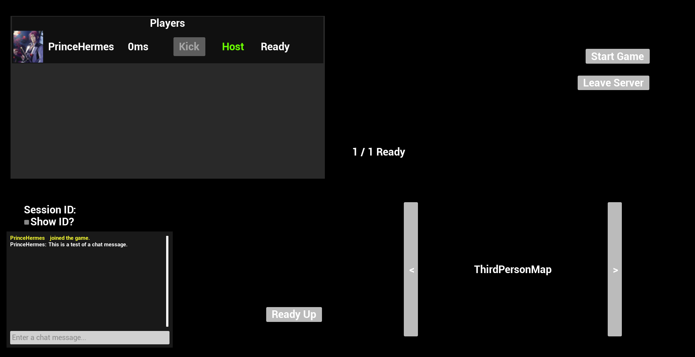

Karlo Sadural - Technical Designer
Games
Combat Project
Star Tempest Studios
Project Spearhead
Archive
Project Astro
Dyscharged
Top Fighter
Dead Time
About
Resume
LinkedIn
GitHub
Project Spearhead
Multiplayer Stealth Game | Unreal Engine 5 | Blueprints | C++ | Student Capstone Project | WIP
Role: Multiplayer Engineer
Online Steam Multiplayer | Interaction System | Replicated Player Statistics | Player Skills Framework
Camera Trace Function
Sphere trace happens 500 pixels ahead
Looks for actor with interface "Highlight"
Checks bCanHighlight? (if player is in actor's collision box)
Make Outline visible if true
If no actors are found, all actors will be unhighlighted.
Lobby System

Every time a player joins a server, Update Player List is called.
It filters through Game State -> "Player Array" which holds Player States.
Player States hold information like Steam Profile Picture and Steam Username.
Host player is detected as they are the zero index in the player array no matter what.
Host player is above the rest of the players, only they can start the game.
For chat, text is submitted into an input box. The server then sends that text and player name to all clients.
Player Statistics
A replicated Actor Component has been created to hold Character Stats.
With this component, in multiplayer, each player and NPC has their own amount of Health, Mana, Charisma, XP, etc.
Player Skills
To set a given skill (in slots 1, 2, 3, or 4), the function should be called.
It also takes an input of type "FAbilityData" which holds AbilityName, Description, and Mana Cost.
When skill is set, it can be properly used (see below).
It takes the given set skill, breaks open the structure, takes its AbilityName.
Based on the given AbilityName, different functions can be run, allowing for fellow designer iteration.